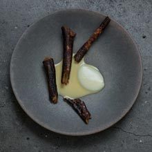
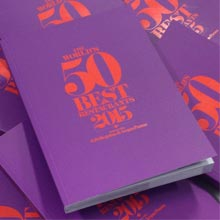
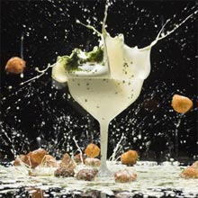

- 
Relae, Copenhagen, Denmark
The third edition of the Sustainable Restaurant Award, sponsored by Pago Los Balancines, sees new entry Relae in Copenhagen take home the title.
The award is given to the restaurant on the 50 Best list with the highest environmental and social responsibility rating, as ranked by audit partner the Sustainable Restaurant Association (SRA). Relae, co-owned by director Kim Rossen and chef Christian Puglisi, follows in the footsteps of last year’s victor, Azurmendi in Larrabetzu, northern Spain
Read more... - 
The World’s 50 Best Restaurants 2015 Guide
Your guide to the year's best restaurants around the globe – The World’s 50 Best Restaurants Guide 2015 – is packed with details on the greatest restaurants around the world, according to our panel of almost 1,000 experts.
Read more...
The brand new pocket-sized World's 50 Best Restaurant 2015 Guide is available to buy from our online shop now - 
50 Best Films
Subscribe to The World's 50 Best Restaurants YouTube channel for exclusive interviews with the world's finest chefs, insights into the greatest restaurants around the globe and thought-provoking content from our #50BestTalks series.
Read more...
Watch the highlights from The World's 50 Best Restaurants 2015
See the message recorded by the chefs of The World's 50 Best Restaurants the night before the 2015 awards ceremony 
Sepia, Sydney, Australia
The One to Watch Award, sponsored by Silestone® by Cosentino, is presented to a restaurant with potential to rise up the list. The 2015 award has been given to Sepia in Sydney, No.84 on the 51-100 list.
Read more...
British-born chef Martin Benn got his start in London under Michel Lorrain and Marco Pierre White, but looking at the menus at his coolly elegant Sydney restaurant – which are as likely to trade in kabosu, sansho and dashi as they are jamón, caviar and quail eggs – it's clear that the years he spent heading the kitchen at local landmark Tetsuya's more than made an impression